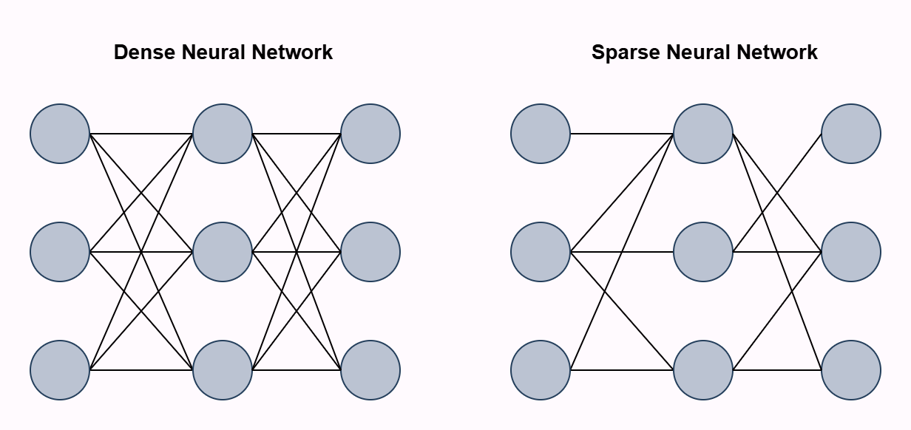
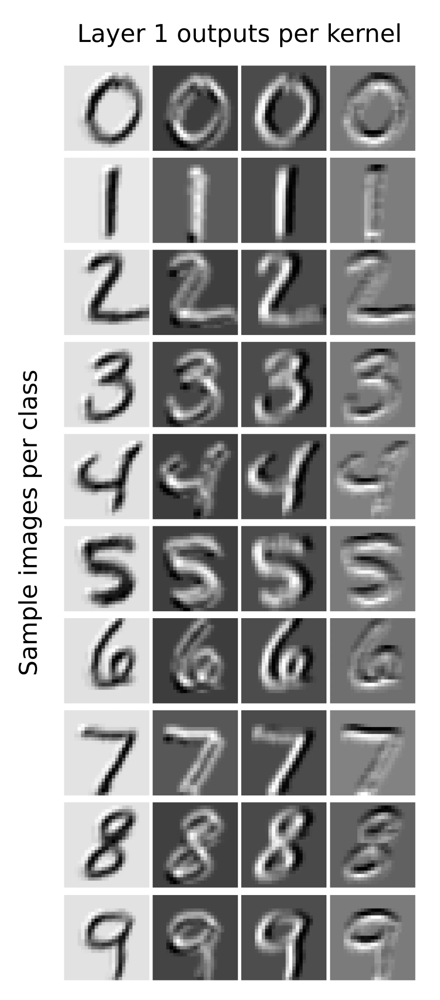

Neural Golfing: Getting 98% accuracy on MNIST with 575 parameters
Jan 26 2025
Code golfing is a computational challenge where people attempt to solve a certain problem using the fewest bytes of source code. I think the field of AI could benefit from a similar style of challenge, hence neural golfing. The aim of neural golfing is to solve a problem at a certain level of performance using a neural network with the fewest number of parameters.
The current direction of AI research usually involves training a huge model on a huge amount of data. Don't get me wrong, this clearly works and produces results with real-world value, but doesn't it just seem inelegant? Much like in code golfing, even trimming a single byte from your solution is good progress, what about a single network weight? Whilst large models are great, imposing these constraints not only helps us see the limits of how much we can compress neural networks on specific tasks. But also can enable us to think about neural networks in new ways, and the various methods we can apply to try and compress these models. In order to encourage this new endeavour, I created neuralgolfing.com to track different challenges, leaderboards, and eventually a handbook for model compression techniques.
Compressing Models: MNIST
As an initial exploration of this new field. I attempted to train the smallest model I could on the MNIST dataset. With the goal of getting an accuracy above 98% on the testing dataset using only the training set to train the model. Pytorch's MNIST example produces an accuracy of 99% with 1,199,882 parameters! I think we can do a bit better.
I'm aware that MNIST is an old and outdated dataset for anything useful in modern machine learning. But it serves as a fun starting point since it is small enough that training runs take a few minutes and I can iterate on ideas quickly. I plan to extend this in the future and tackle larger problems.
Additionally, there are actual papers that still use MNIST, and compare their model sizes to other models. This blog will show that not only can you produce models that are much smaller, but with better accuracy.
Initial Models
Before doing anything fancy, lets try to define some model architectures and train them to see how well we can initially do. The obvious choice of architecture for this dataset is a convolutional neural network. Applying a basic feed forward network not only is sub-par in performance but is pretty inefficient in terms of performance-per-parameter. This is clear when thinking about the data, for starters MNIST images are contained in a 20x20 pixel area, with a 4-pixel border. Because of this border there are 384 pixels in the input that are always blank and thus useless. Given a hidden layer of 100 neurons, that results in a whopping 38,400 useless parameters!
With a mixture of conventional wisdom and trial-and-error, I managed to produce a model with 1055 parameters, with an accuracy of 98.06% on the test set. Not a bad result for some hand-crafted models! It took some iterations to achieve this result which I unfortunately didn't document, so I can't go into details of the intermediate models I tested.
The model uses a 3 layer CNN. With the following number of kernels per layer: 7, 5, 4, and kernel sizes of: 4, 3, 3. The model uses the ReLU activation function with max pooling after the first and second convolutional layer as an obvious addition to reduce model size.
Hyperparameter Optimisation
The above initial result is great, but trying to reduce the model any further results in accuracies below the target threshold (but sometimes close in the 97% range). Maybe we can nudge these smaller models above the target accuracy with a little bit of hyperparameter tuning?
We could sit and manually tune the hyperparameters until we get the result we want, or we can turn to automation. There are various automated hyperparameter tuning methods, such as: Grid Search, Bayesian Optimisation, Evolutionary Algorithms, etc.
We will restrict this hyperparameter optimisation to just tuning the training parameters and not the model architecture. Since different architectures will have different sizes, so if we tried to find the best architecture with an accuracy above 98%, the optimisation process would converge on larger architectures. We could only check architectures that are below our current best or create some fine-tuned heuristic combining model size and accuracy, but for this blog just focusing on hyperparameters should be enough.
There are a couple of ways to perform hyperparameter optimisation. Random search will randomly select hyperparameters with no attempt at converging towards the best solution, this is not optimal but good for some initial data points. Grid search will iteratively search through every combination of hyperparameters given a range and step size. This gives some good coverage but can miss values in-between steps. Whilst it can be parallelised (since we are checking every combination), it is pretty inefficient if certain areas of the grid are obviously dead-ends.
Bayesian Optimisation
The most popular choice is Bayesian optimisation. Bayesian optimisation builds a surrogate model of the objective function to predict the performance of a model given a set of hyperparameters. A separate acquisition function uses the surrogate model to sample from the hyperparameter space, balancing exploration and exploitation. With each set of hyperparameters checked, the surrogate model improves its predictions and helps to better guide the acquisition model to chose promising hyperparameters.
To conduct hyperparameter optimisation, I used the Optuna library, this enables easy Bayesian optimisation coupled with a UI to track the progress of multiple trials. I optimised each parameter between the following specified ranges:
| Parameter | Min Value | Max Value |
|---|---|---|
| Batch size | 4 | 32 |
| Learning rate | 1e-5 | 1e-2 |
| LR step size | 1 | 6 |
| LR gamma | 0.1 | 0.99 |
Applying hyperparameter optimisation enabled the model to be reduced several times whilst keeping above the accuracy threshold. Producing a model with 807 parameters. The main reductions were the first-layer channels, resulting in a model with the following number of convolutional layers: 4, 5, 4 and kernel sizes: 4, 3, 3. This model could get an accuracy of 98.16% with the following hyperparameters:
| Parameter | Final Value |
|---|---|
| Batch size | 14 |
| Learning rate | 0.0008 |
| LR step size | 5 |
| LR gamma | 0.62 |
Not bad! But now any further reductions in the number of kernels per layer or kernel sizes results in accuracies that can't quite break 98% even with hyperparameter tuning. However, we're not done yet.
Sparse Neural Networks
If we can't remove entire kernels or neurons without maintaining our >98% accuracy, perhaps we can remove individual weights?
Sparse neural networks are a type of neural network where not all neurons between layers are fully connected with weights, whilst maintaining good performance. The Lottery Ticket Hypothesis posits that within large, dense neural networks, there exists a smaller, sparse subnetwork (called the "winning ticket") that can match/exceed the performance of the original network. There are various methods to achieve sparsity in neural networks, such as: pruning weights post training, sparse initialisation where we start with a sparse network, dynamic sparsity which applies a sparsity pattern during training, etc.

For this model, I applied brute force pruning of each weight one-by-one. After a weight was set to zero, I evaluated it against the testing dataset and if the model still achieved an accuracy above 98%, the weight remained zero. This was done for every weight in the network. This brute force method is a little computationally intensive and not super effective for larger models but feasible given the size of the model we're working with.
After pruning the current best model at 807 parameters, a total of 135 parameters were removed. This resulted in a model with 672 parameters, able to produce a 98% accuracy on the MNIST testing dataset. This was possible both from the theory that some of the weights aren't needed, but that the original model was able to produce an accuracy above 98%, giving us some tolerance for performance reductions (removing some weights actually improved performance!).
PReLU
So a model with 672 parameters is a pretty nice achievement, but there are still potential improvements to be made. As a final effort, I decided to try different activation functions, specifically replacing ReLU with Parametric ReLU. A neat thing about this activation function (and most modern activation functions) is that it enables single-layer networks to solve non-linearly separable functions like the XOR function, a problem famously unsolvable for older single-layer networks. This theoretically gives the model much more complexity when processing the input and could help to boost performance. Interestingly, the XOR problem can also be solved with single neurons in the brain.
Originally, the best non-pruned model had 807 parameters and took 18 epochs to reach an accuracy of 98.16%. If we swap out the ReLU activation functions in that model for PReLU, which adds additional parameters (1 for each channel in our configuration) the accuracy reaches 98.08% after only 8 epochs! If we leave it run, it achieves a top-score accuracy of 98.39%! With only 13 additional parameters.
Pruning this updated model then takes us to a total parameter count of 575. Simply adding PReLU (13 additional parameters), enabled us to prune almost 100 additional parameters from the model!
Interpretability
Okay so this is where I stopped trying to reduce the model further, there are still plenty of things that could be tried such as active sampling, image transformations, model distillation, label smoothing, etc. But that can be left for another day. Let's now end this blog with some analysis of our micro neural network.
One potential benefit I see of neural golfed models is there small size and compressed knowledge could help efforts in interpretability. Since there are less neurons/weights to analyse and information is theoretically more condensed/optimised and not needlessly spread over multiple neurons/circuits.
High-Level Analysis
Analysing the outputs of each channel after the first layer reveals that the 4 kernels in the first layer perform basic edge detection, notably: positive diagonal, negative diagonal, vertical, horizontal. Interestingly, the first channel is inverted, perhaps this channel performs both positive diagonal edge detection and is used to transfer a lower quality image to the next layer, almost like a residual connection?

Looking at the outputs of the other layers don't provide any obvious insights. However, since our feature vector only consists of 36 neurons, they can be plotted and easily visualised. I plotted a heatmap of the average activations of each neuron in the feature vector for each class. Something to note is that the feature vector is actually the output of 4 kernels producing 3x3 images. So for the below heatmaps, each group of 9 neurons makes up a separate "feature channel". We can see that classes like 1 and 7 rely on the last feature channel, potentially indicating that it represents vertical edge detection.
Feature Visualisation
In order to probe the network further, we can deploy feature visualisation. This is a technique that applies backpropagation on input images in order to maximise certain features (neurons, channels, features, etc). I didn't spend too much time fine-tuning the visualisations but insights can still be gleamed.
Looking at the feature visualisation for the first layer of channels doesn't give too much detail. Luckily, the investigation of the outputs of these channels already show that they perform edge detection, this can be somewhat seen here. The second channel can be seen to activate the most when the corners are cut off (negative edge detection), the third channel has the first few columns empty (vertical edge detection), and the last channel has the last rows empty (horizontal edge detection). The first channel is a but odd, but matches the inverted images found earlier.
Looking at the second layer features, the first and last channels seem to activate the most with vertical and horizontal edges. The second and fourth channels seem to activate along the border, and has some slight hint of diagonal edge detection. The third channel is the most interesting, seeming to both somewhat be a diagonal edge detector and detecting anything in the center of the image.
The last layer gets a little more complex. It seems to be that the four edge detectors are still present, with the first and last channels being horizontal and vertical edge detection, perhaps with some curves mixed in. This the last channel being a vertical edge detector also correlates to the 1 class heavily relying on it.
We can also visualise each neuron in the third-layer channels, essentially the feature vector of the network. Doing so is a reminder of how CNNs operate. It might be a little tricky to see (because each image doesn't have a border), but each group of 9 neurons on the feature vector correspond to different regions of the image. This makes intuitive sense, since regional data is propagated through each layer.
With this information in mind, and looking back at the average activation heatmap. A conclusion to draw, is that each channel in the last layer not only performs some fuzzy edge detection, but edge detection at certain regions of the image. For example the 7 class only really cares about vertical edge detection at the bottom of the screen (the last three neurons in the fourth channel), which makes sense since the top half of the screen will mostly be a diagonal/horizontal line.
Into the Future
The final solution to this challenge produced a model that only uses 575 parameters with an accuracy of 98%. Much improved from PyTorch's 1,199,882 parameter model, with only a 1% difference in testing accuracy. A lot of things were learned during this challenge and it also produced some fun interpretability results.
As mentioned earlier, this was only a test to see how far I could go in compressing a neural network on a basic task. There are still plenty of methods that could be tried and more real-world models that neural golfing can be applied to. If this has inspired you to try model compression and you have some interesting results, consider posting you scores to neuralgolfing.com.